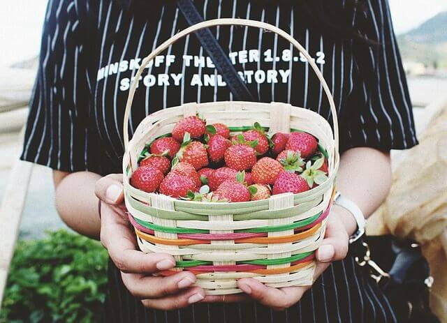
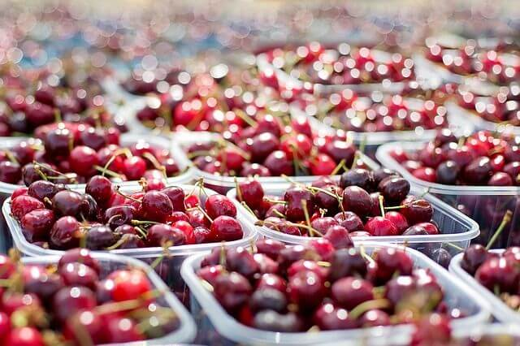

blog
so you get to know me better
-

june 14, 2017
how to steam & pure your sugar pie pumkin
cut the halves into smaller pieces and place in a large pot of water with a steam baskit to keep the pumkin pieces from touching......
read more
-

june 1, 2017
great bulk recipes to help use all your orginec vegetables
a fridge full of organic vegetables purchased or harvested with the best of intentions, and then life gets busy, leaving no time to peel,.....
read more
-
june 5, 2017
how can salmon be raised organically in fish farms?
organic food consumption is rapidly increasing. the heightened interest in the global environment and a willingness to look.....
read more

 vegetable
vegetable